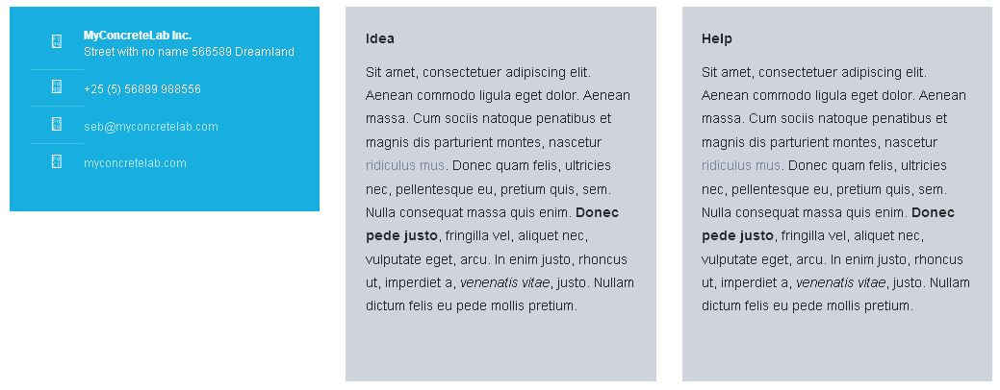
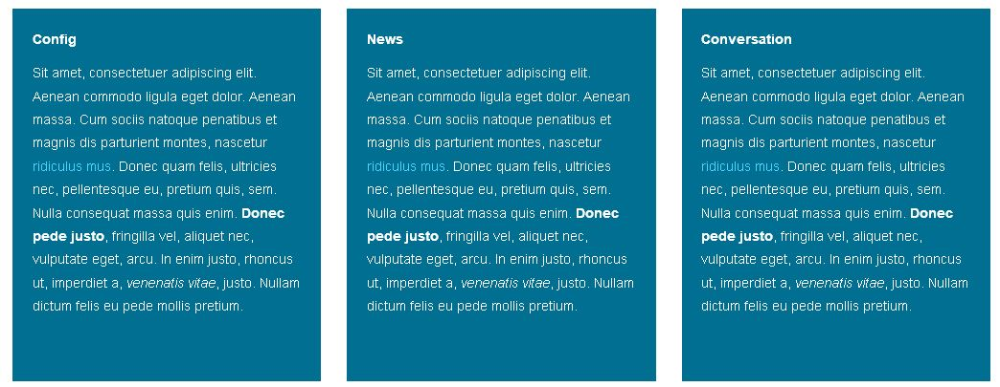

Area Classes¶
Play with classes on Areas to create unique content style
Customize Areas through classes¶
- Concrete5 introduces custom classes for blocks and Areas. This is great news for designers who can now create skins for it.
- Supermint offers classes of colors, spacing and topics for Areas. The three categories can be mixed between them, so you can add a class for color, one for spacing and finally a topic if necessary. Understand quickly by looking at the following examples.
Color classes¶
There are eight classes available for Area:
area-primaryarea-secondaryarea-tertiaryarea-quaternarypage-content-style: Take the design of page content (here white with a small grey border)area-whitearea-blackarea-body: Take the pattern and color of the body
Other classes¶
Take color defined in the color customization .
Spacing classes¶
Four classes are available to add padding into an Area:
- small:
area-space-s - medium:
area-space-m - large:
area-space-l - extra large:
area-space-xl
Topics classes¶
Six classes are available to add topics into an Area :
topic-get-in-touchtopic-ideatopic-helptopic-configtopic-newstopic-conversation
Below topics classes are applied with both space-s class and a secondary or tertiary color class.
 Original reference: web.archive.org page